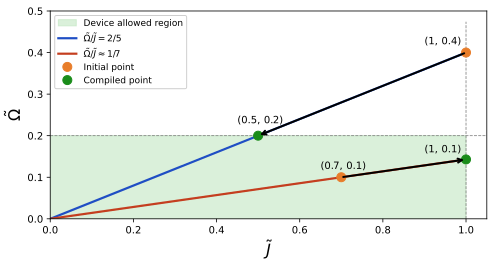

Adimensionalization
In this section, you will learn how to:
- relate the physical Rydberg Hamiltonian to QoolQit’s dimensionless Hamiltonian,
- define the reference interaction \(J_0\) and reference distance \(r_0\),
- understand how compilation chooses the physical scale of an implementation,
- distinguish drive-limited and interaction-limited compilation,
- see why time must be rescaled together with the Hamiltonian
This section describes how QoolQit’s dimensionless formulation connects to real physical quantities, and how compilation maps an abstract programs onto actual hardware.
The QoolQit Model page introduces the main idea of compilation at a high level: the compiler keeps the same dimensionless program while setting the reference physical scale used to realize it on hardware. Here, we make that idea precise by defining the reference interaction \(J_0\), the corresponding reference distance \(r_0\), and the mapping between dimensionless and physical quantities.
Physical Hamiltonian
In physical units, the Rydberg Hamiltonian is
Here \(\hat{n}=\frac{1}{2}\left(1+\hat{\sigma}^z\right)\) is the Rydberg occupation operator.
| Symbol | Description | Typical units |
|---|---|---|
| \(C_6(n)\) | Interaction coefficient for Rydberg level \(n\) | \(\mathrm{rad/s}\times\mu\mathrm{m}^6\) |
| \(\Omega(t)\) | Global Rabi frequency (drive amplitude) | \(\mathrm{rad/s}\) |
| \(\delta(t)\) | Global detuning | \(\mathrm{rad/s}\) |
| \(\Delta(t)\) | Local detuning amplitude | \(\mathrm{rad/s}\) |
| \(\phi(t)\) | Drive phase | \([0,2\pi)\) |
| \(\epsilon_i\) | Local detuning weight | \([0,1]\) |
Introducing the reference energy \(J_0\)
Because the interaction between Rydberg atoms depends on their separation, QoolQit introduces a reference distance \(r_0\) and the corresponding reference interaction in order to make programs device-agnostic.
Concretely, \(r_0\) is the physical separation that corresponds to a dimensionless distance of \(1\): any pair of atoms that sit at distance \(\tilde r_{ij}=1\) in the adimensional model will be placed at distance \(r_0\) on the actual device. This value is not fixed in advance — it is determined by compilation — and, through the relation above, every choice of \(r_0\) implies a definite value of \(J_0\).
This quantity sets the energy scale for the program. All Hamiltonian parameters are then expressed relative to it:
Dividing the physical Hamiltonian by \(J_0\) yields the dimensionless QoolQit Hamiltonian:
Key convention
In QoolQit, the minimum dimensionless distance is fixed so that \(\min(\tilde r_{ij})=1\). Equivalently, the maximum dimensionless interaction is normalized to \(1\): $$ \max(\tilde J_{ij}) = 1. $$
This is the convention used throughout the documentation: the user specifies a dimensionless program, and compilation later chooses which physical scale \(J_0\) will be used to realize it.
From dimensionless programs to physical hardware
A QoolQit program is specified in terms of dimensionless quantities such as \(\tilde{J}_{ij}\), \(\tilde{\Omega}(t)\), \(\tilde{\delta}(t)\), and \(\tilde t\). These quantities describe the structure of the program independently of any particular device.
To run the program on actual hardware, one must choose a concrete value of \(J_0\). Once \(J_0\) is fixed, all dimensionless quantities are converted back into physical ones:
and the physical distances are obtained from
So choosing a compilation is equivalent to choosing the physical reference scale \(J_0\), and therefore also the physical distance scale \(r_0\).
Compilation
The geometric picture of compilation in dimensionless units — where fixing the ratio \(\tilde{\Omega}/\tilde{J}\) defines a ray in the \((\tilde{J},\tilde{\Omega})\) plane and compilation moves the program along that ray until it fits inside the allowed region — is introduced in The QoolQit Model. Here we translate that picture into physical units.
For a fixed dimensionless program, changing the reference scale \(J_0\) rescales all physical Hamiltonian parameters simultaneously:
where \(r_0 = (C_6/J_0)^{1/6}\,\mu\mathrm{m}\). All physical realizations of the same dimensionless program therefore lie on a ray in the \((J,\Omega)\,[\mathrm{rad}/\mu s}]\) plane parameterized by \(J_0\).
The figure below illustrates this picture. Each straight line corresponds to a different fixed ratio \(\tilde{\Omega}/\tilde{J}\), and therefore to a different dimensionless program. The shaded green region represents the set of parameters allowed by the device, bounded by the maximum interaction strength \(J_{\max}\,[2 \pi \mathrm{rad}/\mu s= MHz]\) and the maximum drive amplitude \(\Omega_{\max}\,[2 \pi \mathrm{rad}/\mu s = MHz]\).

Compilation consists of selecting, along the ray defined by the program, the largest \(J_0\) whose corresponding physical parameters lie inside the allowed region. A larger \(J_0\) realizes the same dimensionless program with a higher physical amplitude and a shorter physical runtime \(t = \tilde{t}/J_0\,[\mu \mathrm{s}]\), making it the most efficient choice.
Which hardware constraint becomes binding first determines the compilation strategy.
Drive-limited compilation
When the drive amplitude bound \(\Omega_{\max}\,[\mathrm{rad}/\mu s]\) is reached before the minimum-spacing constraint, the largest valid \(J_0\) is obtained by saturating the drive limit:
The corresponding reference distance is then
Interaction-limited compilation
When the minimum atom spacing \(r_{\min}\,[\mu\mathrm{m}]\) is reached before the drive limit, the largest valid \(J_0\) is obtained by saturating the distance constraint. Since \(r_0 = (C_6/J_0)^{1/6}\) and the closest pair has dimensionless distance \(\tilde{r}_{\min} = 1\), setting \(r_0 = r_{\min}\) gives
This corresponds to placing the closest pair of atoms at the smallest physical spacing the device allows.
Note
Compilation succeeds only if there exists at least one value of \(J_0\) that satisfies all hardware constraints. If multiple valid values exist, QoolQit selects the largest one so as to maximize the physical scale of the implementation.
Time scaling
The discussion above explains how compilation rescales the Hamiltonian coefficients while preserving the same dimensionless program. The same reasoning also shows that the time scale must be rescaled.
Because QoolQit uses a dimensionless Hamiltonian defined relative to a reference energy scale \(J_0\), time must be rescaled by the same quantity. This follows directly from the Schrödinger equation.
In physical units, the dynamics are governed by
We want the physical and dimensionless descriptions to generate the same unitary evolution:
Using
this equivalence is possible only if the integration variables satisfy
With this choice, the Schrödinger equation becomes
Assuming \(\hbar=1\), this is written simply as
This shows that the dimensionless evolution depends only on \(\tilde H\) and \(\tilde t\). Therefore, if compilation changes the reference scale \(J_0\), the corresponding physical runtime must change accordingly in order to preserve the same dimensionless evolution.
Compiling time back to physical units
Once compilation chooses a concrete value of \(J_0\), dimensionless times are mapped back to physical durations through
This means that choosing a larger \(J_0\) produces a faster physical implementation of the same dimensionless program.
Equivalently, if compilation changes the reference scale from \(J_0\) to
then a fixed dimensionless duration \(\tilde T\) is realized physically in a time
So reducing the energy scale by a factor \(\alpha\) increases the physical runtime by a factor \(1/\alpha\).
This is consistent with the compilation strategy described above: whenever possible, QoolQit selects the largest feasible \(J_0\) compatible with device constraints, so that programs run with the highest available amplitudes and shortest physical durations.
Physical interpretation of dimensionless time
The meaning of \(\tilde t\) is tied to the fact that \(J_0\) is the interaction energy scale used to realize the program. Dimensionless time therefore measures how long the system evolves relative to its intrinsic interaction timescale.
In an interacting many-body system, this gives \(\tilde t\) a natural physical interpretation in terms of the buildup and propagation of correlations. Following the Lieb--Robinson picture, correlations spread at a finite speed set by the interaction scale. Roughly speaking:
- \(\tilde t \ll 1\) corresponds to evolution that is too short for interactions to significantly affect the dynamics;
- \(\tilde t \sim 1\) corresponds to the timescale on which nearest-neighbor correlations can begin to emerge;
- \(\tilde t \sim n\) can be interpreted as the timescale on which correlations may have propagated across a distance of order \(n\) lattice spacings, assuming approximately ballistic spreading.
This interpretation is useful because it is independent of the particular hardware realization: the same dimensionless time corresponds to the same interaction-relative evolution, even though the physical runtime after compilation may differ from one device to another.
Special case: a single atom
The interpretation above relies on interactions being physically present. For a single atom, however, there are no pairwise interaction terms, so \(J_0\) is no longer an intrinsic dynamical scale of the problem.
Mathematically, the dimensionless convention still works exactly as before: one may still define
and rewrite the Hamiltonian in dimensionless form. But in this case, \(J_0\) is only a reference scale introduced by convention. It is not a scale that the dynamics can directly probe, because there is no interaction-driven process in the system.
As a result, saying that time is measured "in units of the interaction" remains mathematically valid, but it is not especially informative physically in the one-atom limit.
For a single atom, time should instead be interpreted through the local dynamics generated by the drive and detuning, namely through quantities such as \(\tilde\Omega\) and \(\tilde\delta\). For example, when detuning is absent, the natural timescale is the Rabi period set by the drive amplitude. In that regime, the relevant physical question is not how long it takes correlations to spread, but how long it takes the atom to undergo coherent single-particle evolution.
Single-atom programs
For one-atom programs, the dimensionless formulation remains fully consistent and compilable, but the physical interpretation of time is different from the many-body case. Dimensionless time should be understood as a convenient normalized parameterization of the pulse sequence, rather than as an interaction-driven clock.